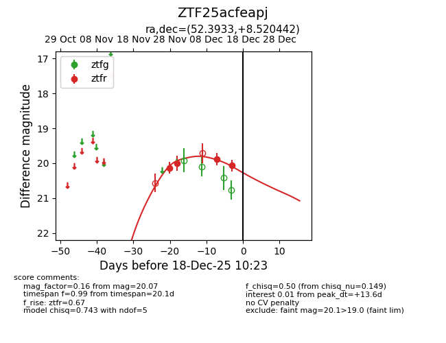
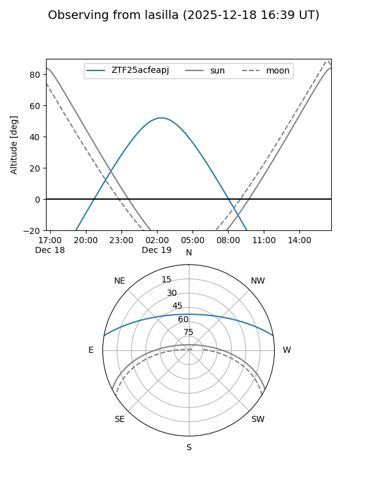
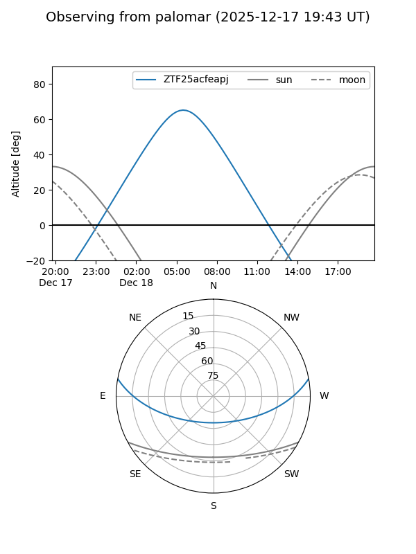

ZTF25acfeapj
Target ZTF25acfeapj at 2025-12-18 11:17
Aliases and brokers:
FINK: fink-portal.org/ZTF25acfeapj
Lasair: lasair-ztf.lsst.ac.uk/objects/ZTF25acfeapj
ALeRCE: alerce.online/object/ZTF25acfeapj
alt names
ZTF25acfeapj (ztf,fink_ztf)
Coordinates:
equatorial (ra, dec) = 52.3933,+8.52044
equatorial (HMS+DMS) = 03:29:34.39,+08:31:13.59
galactic (l, b) = (175.6261,-37.68118)
Photometry
last ztfr=20.07
4 ztfr detections
Lightcurve

Visibility


Additional plots